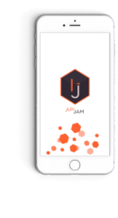

ApiJam
Login with facebook
A beautiful API that empowers open data and machine learning
to make us love traffic jam
Website
Skype ID
contact@apijam.com
Facebook
Twitter
LinkedIn
GitHub
Instagram
More
Networks, Social feeds, Map
How it works
1 / 5
2 / 5

3 / 5
4 / 5
5 / 5